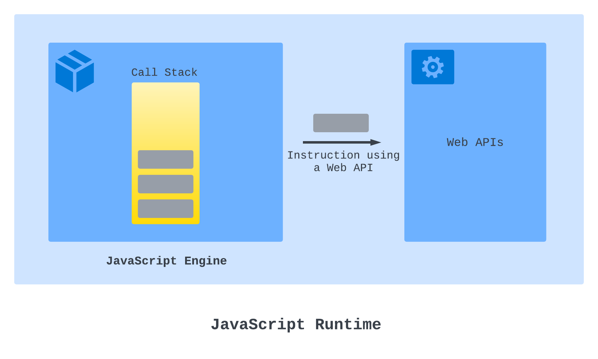
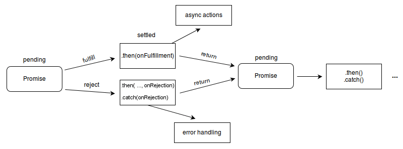

[Javascript] Javascript의 비동기 작업 알아보기 (w. Promise, async)
Javascript에서의 비동기 작업
기본적으로 Javascript는 싱글-스레드 언어이기 때문에, 오래 걸리는 동기식 코드를 작성하면 해당 코드가 실행되는 동안은 다른 작업을 수행할 수 없습니다.
즉, 해당 코드가 나머지 코드를 블락하게 됩니다.
이를 해소하고자, Javascript에서는 보통 실행엔진이나 브라우저에서 제공되는 Web API를 사용해 타이머 기반 작업, 타 사이트 요청 등의 비동기 작업을 처리합니다.
Web API에는 fetch, setInterval, setTimeout, Promise 등이 포함됩니다.

Web API는 비동기 작업이 끝난 뒤, 작업 결과를 바탕으로 실행되는 콜백 함수를 JS 엔진의 Callback Queue에 전달하게 됩니다.
이후 Event Loop가 Call Stack에서 처리할 작업이 없을 때, Callback Qeue의 작업들을 등록해 처리합니다. #
- 과거에는 XMLHttpRequest 와 같은 객체를 이용해 웹 비동기 통신을 진행하기도 했으나, 네트워크 상태나 응답속도에 따른 중단 이슈 때문에 deprecated되어 사용하지 않습니다. #
콜백 함수
최신 Javascript 비동기 작업은 대부분 Promise 객체를 반환하거나, setTimeout과 같이 인자로 작업이 끝난 뒤 실행할 행동이 정의된 콜백 함수를 인자로 받게됩니다.
타이머 기반 작업의 경우, 콜백 함수에 별다른 인자가 주어지지 않지만, Promise에 사용되는 콜백 함수의 경우 작업의 결과(또는 에러)가 인자로 주어지게 됩니다.
Promise
Promise란, 작업이 완료되지 않은 비동기 작업에 의해 반환된 객체로, 작업의 최종 완료/실패를 나타내는 프록시 역할을 하는 객체입니다.
기존의 함수들이 콜백 함수를 인자로 받던것과 달리, Promise는 then 또는 catch를 통해 콜백 함수를 붙이는 방식으로 코드를 전개할 수 있습니다. 즉, Promise Chaining이 가능합니다.
Promise의 구조
const myPromise = new Promise((resolve, reject) => {
...
if(error) reject("error");
else resolve("abc");
});
Promise는 생성시 executor라고 불리는 실행 함수를 인자로 받습니다.
이러한 생성 방식 때문에, Promise를 지원하지 않는 함수가 있다면 생성자로 감싸 지원하도록 만들 수 있습니다.
실행 함수
이는 reslove 및 reject 함수를 인자로 받는 함수입니다.
보통 실행 함수는, 비동기 작업을 모두 처리한 뒤 작업이 끝날 때 resolve를 호출해 Promise를 이행(fulfilled)하고, 에러가 발생한 경우 reject를 호출해 Promise를 거부(rejected)합니다.
Promise의 상태

Promise는 대기, 이행, 거부 중 하나의 상태를 가집니다.추가로, Promise가
fulfilled되거나 rejected된 경우, pending이 아닌 settled(또는 locked-in) 상태라고 일컬어집니다.
대기(pending)
연산을 이행하지도, 거부하지도 않은 초기 상태입니다.
이행(fulfilled)
연산이 성공적으로 완료됐음을 의미합니다.
실행함수 내부에서 resolve(value)를 호출해 .then()의 인자로 전달될 콜백 함수에 값을 전달합니다.
거부(rejected)
연산이 실패했음을 의미합니다.
실행함수 내부에서 reject(value)를 호출해 .catch()의 인자로 전달될 콜백 함수에 값을 전달합니다.
Promise 연결(Chaining)
settled된, 즉 fulfilled 되거나 rejected된 Promise에 추가 작업을 연결하기 위해 then(), catch(), finally() 메서드를 사용할 수 있습니다.
위 메서드들은 Promise를 다시 반환할 수 있기 때문에, 연쇄적으로 연결할 수 있습니다.
then(onFulfilled, onRejected)
promise.then(onFulfilled, onRejected);
두 개의 콜백 함수를 인수로 받고, Promise를 반환하는 함수입니다.
처음 주어지는 함수는 Promise가 이행되었을 때, 두 번째 함수는 Promise가 거부되었을 때를 위한 콜백 함수입니다.
then()의 매개변수 중 하나 이상을 생략하거나, 함수가 아닌 값을 전달한 경우 핸들러가 없는 것으로 인식해 then() 이전의 Promise의 마지막 상태를 그대로 이어받습니다.
const myPromises = new Promise((resolve, reject) => {
resolve("abc");
});
myPromise.then("가나다라").then(r=>console.log(r)); // "abc"
인수로 주어진 핸들러 함수의 결과에 따라, 반환되는 Promise는 다음과 같은 규칙을 갖습니다.
- 콜백 함수가 값을 반환한 경우: 반환되는 Promise(이행됨)는 그 반환값을 결과값으로 갖습니다.
- 콜백 함수가 값을 반환하지 않은 경우: 반환되는 Promise(이행됨)는
undefined를 결과값으로 갖습니다. - 오류가 발생한 경우: 반환되는 Promise(거부됨)는 그 반환값을 결과값으로 갖습니다.
- 이행된/거부된 프로미스를 반환할 경우: 반환되는 Promise(이행/거부됨)는 그 프로미스의 반환값을 결과값으로 갖습니다.
- 대기중인
Promise를 반환할 경우: 반환되는 Promise(이행됨)는 그 프로미스의 이행 여부/결과값을 따릅니다.
catch(onRejected)
프로미스가 거부되었을 때, 호출될 콜백 함수를 지정하는 함수입니다.
catch(onRejected)는 실제로는 then(undefined, onRejected)으로 동작합니다.
onRejected 함수는 Promise에서 reject(reason) 호출 시 인자로 넘긴 reason 값을 인수로 받습니다.
onRejected 함수 내부에서 반환되는 값에 따라, 반환될 Promise가 이행될지, 거부될지 결정됩니다.
Promise가 거부되고, 이를 처리할 거부 핸들러가 없는 경우, unhandledrejection이벤트가 발생하고, 처리할 거부 핸들러가 있는 경우 rejectionhandled 이벤트가 발생합니다.
finally(onFinally)
Promise를 처리(이행/거부)한 후, 호출할 콜백 함수를 지정합니다.
finally(onFinally) 역시 동등한 Promise를 반환합니다.
만약 onFinally 내부에서 예외가 발생하거나, 거부된 Promise를 반환하면 finally()가 반환하는Promise는 해당 값으로 거부되게 됩니다.
- 이외의 반환값은
finally()가 반환하는Promise의 상태에 영향을 주지 않습니다.- 예시로,
Promise.resolve(2).finally(() => 77)는 2로 이행됩니다.
- 예시로,
- 또한,
onFinally콜백은 인자를 받지 않습니다.- 이는
finally()가 결과에 관계없이Promise처리 후 수행될 작업(무언가를 처리하거나 정리)을 수행하는데 사용되기 때문입니다.
- 이는
콜백함수의 생략
연결된 .then()에서 콜백 함수가 생략되어도, 다음 체인으로 계속 이어집니다.
따라서 체인의 마지막 .catch()까지 .then()의 인자에 거부 콜백함수를 생략할 수 있습니다.
그렇기 때문에 마지막에 .catch()로 연결 되어있을 때, 즉각적인 오류 처리가 필요하다면 콜백함수 내부에서 특정 타입의 에러를 던져 체인 아래까지 오류 상태를 유지해야 합니다.
Promise의 동시성
Promise에서는 비동기 작업 동시성을 위해 4개의 정적 메서드를 제공합니다.
4개 메서드 모두 Promise로 이뤄진 iterable한 객체(ex. Array)를 인수로 받고, 새로운 Promise를 반환합니다.
Promise.all(iterable)
Promise.all([promise1, promise2, promise3]).then((values) => {
console.log(values);
});
인자로 주어진 모든 프로미스가 이행되면 이행되고, 프로미스 중 하나라도 거부되면 거부된 Promise를 반환합니다.
iterable이 비어있는 경우: 반환값이 없는, 이행된 Promise를 반환합니다.iterable내부에Promise가 없는 경우: iterable을 내부에 포함하는, 이행된 Promise를 반환합니다.- 이외의 경우: 인자로 주어진 모든
Promise가 이행되거나, 한Promise가 거부될 때 비동기적으로 이행/거부되는Promise(이전까진 Pending 상태)를 반환합니다.- 반환되는
Promise의 이행 값의 순서는 인자로 주어진Promise의 순서와 동일합니다. - 주어진
Promise중 하나라도 거부될 경우, 다른Promise의 이행여부와 관계 없이 첫 번째 거부reason를 사용해 거부합니다.
- 반환되는
Promise.allSettled(iterable)
모든 Promise를 이행/거부한 뒤, 각 Promise에 대한 결과를 나타내는 객체 배열을 반환합니다.
정확히는 결과 배열을 resolve()의 입력으로 전달하는, pending된 Promise를 반환합니다.
만약, 빈 Iterable 객체를 인자로 받은 경우, 빈 배열을 반환하는 이미 이행된 Promise를 반환합니다.
반환된 배열의 각 객체는 Promise 처리 상태("fulfilled", "rejected")를 나타내는status와 상태에 따른 값, 즉 fulfilled 상태라면 value, rejected 상태라면 reason을 갖습니다.
Promise.any(iterable)
프로미스 중 하나라도 이행되면 이행하고, 모든 프로미스가 거부되면 거부합니다.
즉, 하나라도 이행된다면 첫 번째 이행 값으로 이행되고, 모든 Promise가 거부되면, 거부 reason 배열이 담긴 AggregateError 객체를 반환하는 Promise를 반환합니다.
Promise.race(iterable)
프로미스 중 가장 먼저 처리된 것의 결과값을 토대로 이행/거부될 Promise를 반환합니다.
즉, Promise 중 하나라도 먼저 이행되면 이행 예정인 Promise를, Promise 중 하나라도 먼저 거부되면 거부 예정인 Promise를 반환합니다.
Promise를 동기적으로 다루는 방법, async function
async function (param0, param1, /* ... */ paramN) {
statements
}
// 또는 Arrow Function 형태로도 사용 가능합니다.
async (param1, param2, ...paramN) => {
statements;
};
async function이란, 여러 Promise간의 흐름을 순서대로 처리할 수 있는, 즉 여러 비동기 함수들을 동기적인 순서로 진행시키는 함수를 말합니다. 항상 Promise를 반환할 수 있습니다.
async function은 0개 이상의 await 키워드를 포함할 수 있는데, await가 달린 Promise를 만나게 되면 해당 Promise가 이행/거부될 때 까지 함수 실행을 일시 중단하며, 처리가 된 뒤 다시 진행됩니다.
즉, Promise를 반환하는 함수를 동기식인것 처럼 동작하도록 해줍니다.